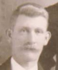

Charles James Culmer 1873 - 1936
[ Home ] | [ Calendar ] | [ Surnames Index ] | [ Errors ] | [ Family History ]A fish carrier and the child of Henry Culmer (a coal carman) and Eliza Arnold, Charles Culmer, the first cousin twice-removed on the mother's side of Nigel Horne, was born in Preston, Wingham, Kent, England on 23 Nov 18731,2, was baptised there on 11 Jan 1874 and married Elizabeth Hook (with whom he had 2 children: Charles Frederick and May Ellen Elizabeth) in St. Mary Cray, Kent, England on 27 Aug 18933.
During his life, he was living on Farwig Lane, Bromley, Kent on 31 Mar 19014; and in Hallowell, Prince Edward, Ontario, Canada in 19115 which is where he died on 6 Oct 1936. He arrived in Canada in 1906.He was buried at Glenwood Cemetery Company, Picton, Ontario on 8 Oct 1936.
Parents
- Henry was born c. Nov 1851
- Eliza was born in 1849
Children
- Charles Frederick was born on 4 Feb 1895
- May Ellen Elizabeth was born c. May 1897
Citations
- England & Wales births 1837-2006 - Findmypast
- England Marriages 1538-1973 - Findmypast
- England & Wales Marriages 1837-2005 - Findmypast
- 1901 England, Wales & Scotland Census - Findmypast (was age 27 and the head of the household)
- Canada Census 1911 - Findmypast (was the head of the household)
Media
Charles James Culmer

Charles James Culmer - Death Certificate

England & Wales births 1837-2006 - BMD/B/1873/4/AZ/000124/174
1901 England, Wales & Scotland Census - GBC/1901/0003704772
England & Wales marriages 1837-2005 - BMD/M/1893/3/AZ/000074/286
England Marriages 1538-1973 - R_849368751
England Marriages 1538-1973 - R_849369703
Canada Census 1911 - CAN/CENSUS/1911/03632742
Family Trees - FMP/1330246782
England Births & Baptisms 1538-1975 - R_884599504
Family Tree

Map
Generated by ged2site. Last updated on Jul 3, 2024
Known Issues
Death date (6 Oct 1936) has no citations
Burial date (8 Oct 1936) has no citations
No records of living with anyone